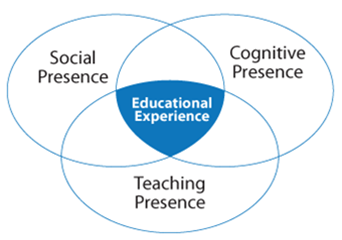

Online Pedagogy: Community of Inquiry
Community
of Inquiry
According to Rourke, Anderson, Garrison, and Archer (2001), a community
of inquiry is comprised of three overlapping key elements: cognitive
presence, social presence, and teaching presence. Deep and meaningful
learning is generated through the interaction of these three core
elements within a community

Rourke, Anderson, Garrison, & Archer (2001)
Social Presence:
Social presence is the complete and interactive educational experience
of participants in the didactic process. When participants in an online
course help establish a community of learning by projecting their
personal characteristics into the discussion or other activities, they
present themselves as real people.
Cognitive Presence:
The extent to which the professor and the students are able to
construct and affirm meaning through sustained discourse (discussion)
in a community of inquiry is cognitive presence. It is a vital element
in enhancing critical thinking. Cognitive presence can be demonstrated
by introducing factual, conceptual, and theoretical knowledge into the
discussion.
Teaching Presence:
Teaching presence supports the design and management of an educational
experience and facilitates the communication between teachers and
students. Teaching presence supports and enhances both cognitive and
social presence in achieving educational outcomes.
Building a community is essential for online courses. It is important
to emphasize the joint development of cognitive presence, social
presence and teaching presence in order to foster community in the
class. This encourages students to feel comfortable in the course,
establishing relationships and openly discussing course content with
peers. Cultivating a strong sense of community takes time,
commitment and good planning. The following are some suggested
activities in an online course to help build a social learning
community:
- Ice-breakers/Introductions
- Case Studies
- Group Projects
- Group Discussions
- Role-Playing
- Summarizing